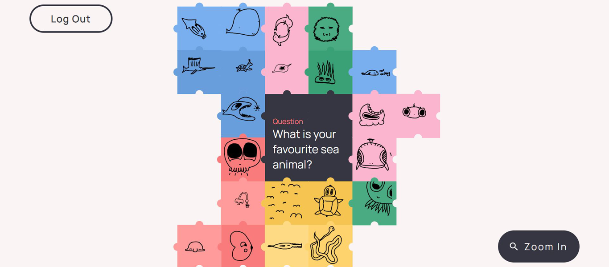

DRAW TOGETHER
Draw Together is a set of tablet companion applications designed as an in class activity for students with speech and/or language disorders. Draw Together prompts students to communicate with one another through drawing on their own devices, and then having their drawings shared with their classmates through an interactive display. The application is designed as a fun, accessible, child friendly way for children to interact with one another, where they might usually have some difficulties doing so. The application seen above is a functional prototype of the student application, in the form of a web application.


Features
- Login system
- > retain user information, system adjusts accordingly
- > user databased stores information and drawings
- Drawing space
- > user can draw
- > change background colour
- > erasing areas of the drawing
- > undo or redo the 10 most recent changes
- Interactive Jigsaw display
- > all stored drawings displayed in jigsaw templates
- > users can zoom in/out of, and pan around
- > jigsaw data structure displays drawings from the centre, spiraling outwards
- > piece placement algorithm with priorities
Implementation details
Software overview
The student prototype is developed as a locally hosted website with a frontend and a backend. The frontend is programmed in vanilla HTML, CSS and JavaScript that manages the visual design of the prototype. The backend is hosted locally using Node.js in combination with Express.js to communicate between the frontend, and a database, in this case, due to the current simplicity of the implementation, NeDB was used as a lightweight database framework. Other libraries or packages that were used during the development of the prototype include p5.js, jQuery, and the Node.js FileSystem.
Data overview
In the prototype, data is stored using the NeDB database framework, in the ‘database.db’ file. The server accesses the database, and calls the file when it needs to read or store data. The database stores all users in the system in the follow JSON object format:
- ‘uid:{users unique id}’ - represented as a 5 character string
- ‘fname:{users first name}’ - represented as a string of characters
- ‘sname:{users surname}’ - represented as a string of characters
- ‘id:{nedb database identification}’ - generated by the database
The information of the current user is stored in a separate ‘curr_uid.json’ file (in actual implementation this would likely be managed locally on the user's device). The data stored in this file is the database entry for that user. This data is used to send information to the server based on the user’s current progress, or to get data from the server when the user needs to retrieve information, usually in the form of their own drawing. Lastly, the server stores all images completed by users in a ‘user_imgs’ folder as JSON objects in ‘uid.json’ files where ‘uid’ represents the user's unique 5 digit identification number. These files contain the following information:
- ‘name:{users full name}’ - a combination of all user names as one string
- ‘col:{colour of the users background}’ - represented as a non-negative integer that references the index of the colour amongst all colours
- ‘drawStr:{users drawing}’ - represented as a base64 string so that the image data can be passed around and stored
It should be noted that these files should be further categorically stored based on the data/activity that the drawing was in response to, to accommodate for further activities. These files are stored and only the server has access to them at any given time. At no point can the user directly access the data in the database/file system (this is similar to actual implementation).
Drawing pad implementation
The drawing pad component is developed using the p5.js javascript library that affords for
visual javascript. This is specifically used in the ‘drawpad.html’ page represented as the
canvas the user draws on, and interactable through mouse press, as well as external buttons
on the side. The primary drawing implementation simply uses
the user’s mouse position and the mouse buttons to determine if a line should be drawn
between the previous mouse position and the current mouse position at any given frame.
The eraser is treated the same way, but rather than drawing a line with the colour black, the
line is drawn in the same colour as the background to give the illusion of erasing.
The background colour change is performed similarly to the p5.js image THRESHOLD
function, which converts an image to black and white by looping over all pixels on the screen
and determining their new colour based on colour information in comparison to a threshold
value. In our case, the code loops over all pixels, and either assigns it the colour black (where
the user has drawn), or the new background colour. This is so that the pixels that have been
erased also change colour with the background. The threshold value used,
is 1 value less than the sum of the RGB channels of the darkest colour (the darkest shade of
green in this case). In this way, any colour above the threshold value is changed to another
colour, and the black pixels stay black. It should be noted, to keep the application performant
for all users, the pixel density is constrained to 1 for all users so that looping over all pixels
on the canvas is not an intensive process. Without constraint, the background colour change
takes at minimum 4 times as long, and negatively impacts user experience.
The undo button is linked to the drawing history, which is stored in a separate History Buffer
data structure that acts as a circular buffer. This works by generating an array of a
predetermined size (buffer size + 1), and storing the start, and end pointers of the used
portion of the array. As elements are added to the array, the endpoint is incremented, and if it
ever reaches the end of the array, it loops around back to the start of the array, incrementing
the start pointer by 1, effectively overriding the first element in the array. In this way, a
number of user actions can be stored up to the buffer size, and any subsequent actions will
override the oldest user action. Due to issues and errors when passing around a canvas,
each user action is stored as an image of the canvas at the time of that action, and when the
user reverts an action, the canvas copies all pixels of the image, overriding the current
canvas.
Jigsaw data structure

The jigsaw uses a Jigsaw Grid data structure to numerically represent an array (where the
jigsaw pieces are stored), as a square jigsaw spiralling outwards. This data structure is necessary to
afford for a square of jigsaw pieces that infinitely expands from a central location (the
question). Look below for a visual representation of the Jigsaw Grid.
To get from any given piece in the data structure to any adjacent piece in the data structure,
mathematical patterns are used to equate the position. This is necessary for any fine-tuned
placement algorithms, as well as possible adjacency checks for individual pieces. As such,
each piece in the grid has 4 key components:
- Index
- Rings
- Rows / Columns
- Quadrant
To find any other adjacent piece a set of checks are used to determine the array position of that piece based on the current position and the direction of the next piece. These are found through a series of mathematical patterns based on the visual layout above and can be found summarized below.
At each array position with a piece, a reference to the HTML DOM element is stored, along with the JSON object of the user's drawing. This way, the ‘jigsaw.js’ script can create and assign pieces and their respective locations on the screen, as well as pass necessary information when an individual piece is clicked on. User interactivity is determined through ‘mousedown’, ‘mousemove’ and ‘mouseup’ events, along with boolean variables to determine the user's intended course of action when they click on the screen. This allows the code to understand whether the user intends to click and view a singular drawing, or to pan the jigsaw display to see more of the images.
Credits
Noah Pham Van - Illustrator, Designer
Raveen Jayawardene - Animation/Video, Designer
Wilfred Wong - Project Planner/Management, Designer